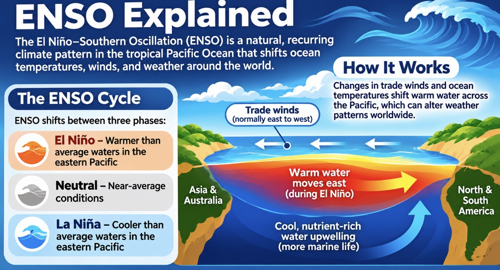
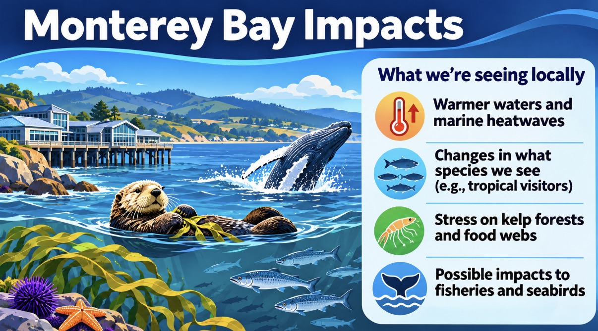
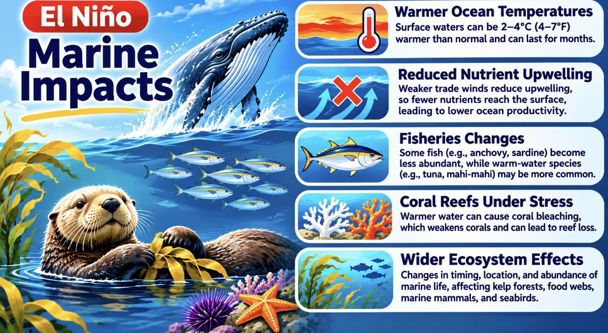
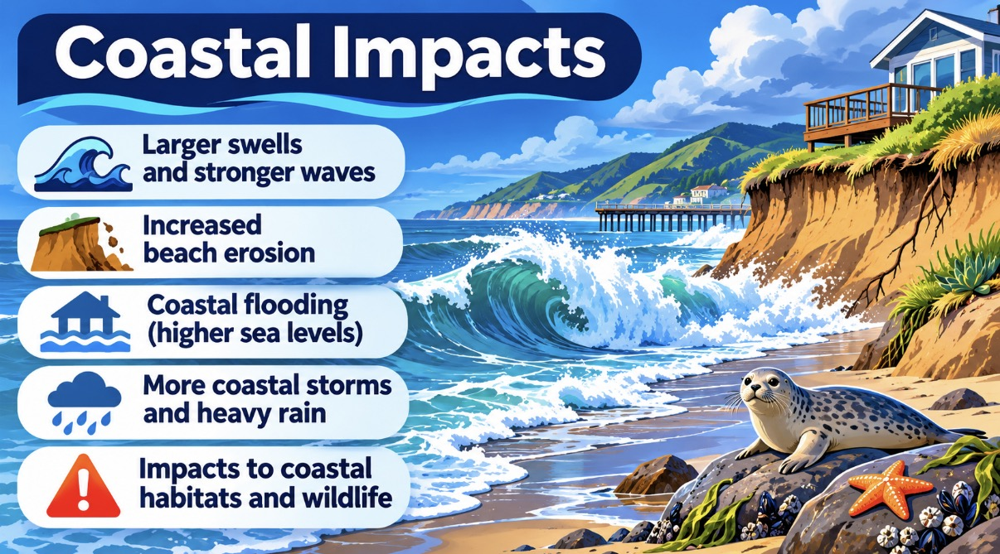
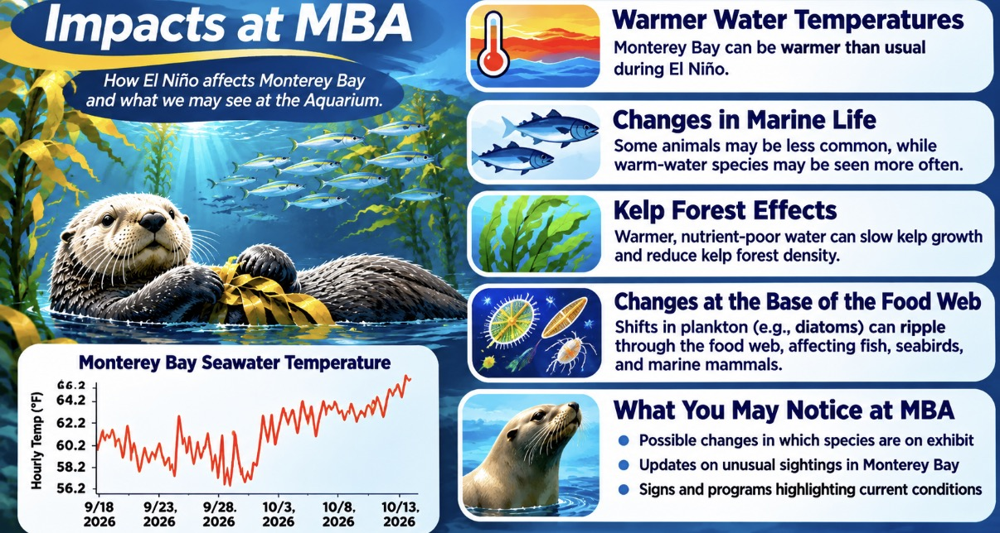
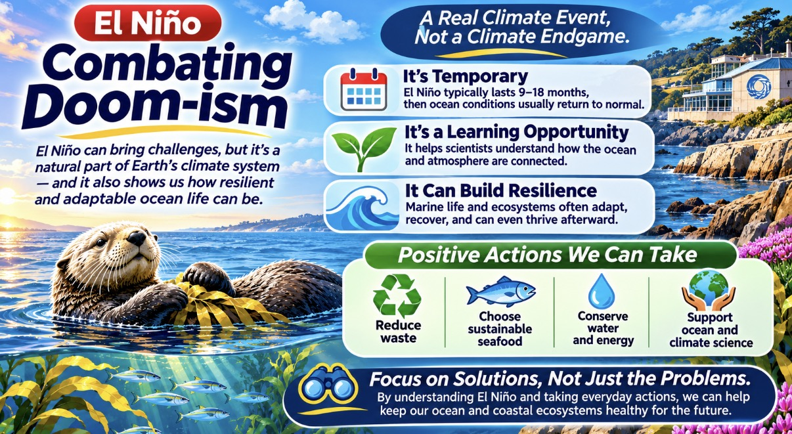
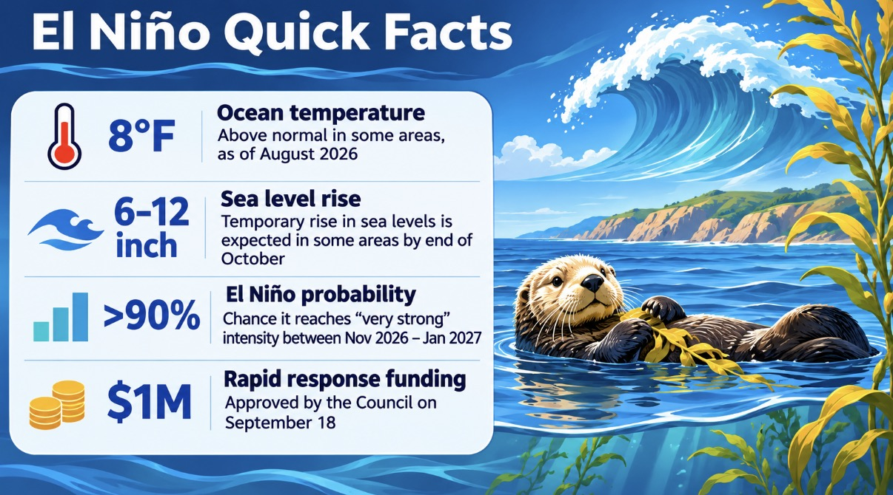
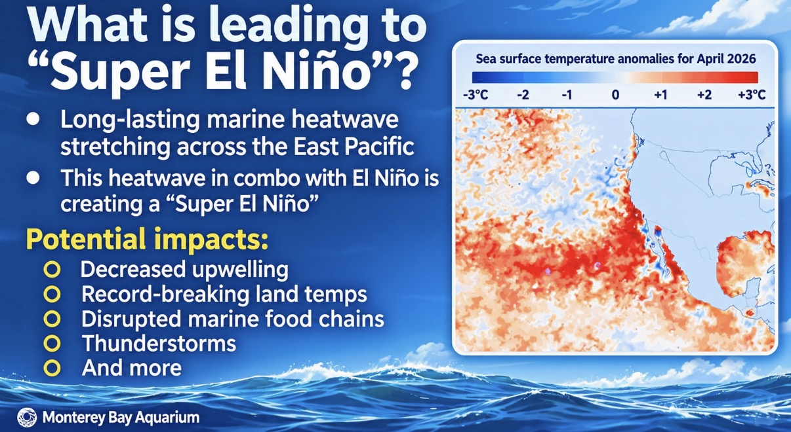

Understanding El Niño
1Learning Objectives⌄
- Define El Niño and ENSO
- Understand the ocean–atmosphere connection
- Recognize the impacts
- Interpret impacts wisely
- Apply what you learn

2El Niño Basics⌄
El Niño is the warm phase of ENSO (El Niño–Southern Oscillation), a natural climate cycle in the tropical Pacific.
1. Normal Pacific conditions
- Winds and surface currents move west. Trade winds (which normally blow from east to west near the equator) help drive a westward surface current. Warm water piles up in the western Pacific, where sea level is slightly higher and the warm layer is thicker.
- Below the surface, water flows east. The Equatorial Undercurrent carries cooler water eastward beneath the warm surface layer. The difference in sea level between the western and eastern Pacific helps drive this flow.
- Upwelling supplies nutrients in the east. The warm surface layer is normally thinner in the eastern Pacific. Where surface water moves away, cooler, nutrient-rich water rises to replace it. Near the Galápagos, some of the undercurrent’s water also rises as it encounters the islands. Those nutrients support phytoplankton and the marine food web.
2. What changes during El Niño
- The westward push weakens. When the trade winds weaken, some of the warm water that had piled up in the west spreads eastward. The east–west difference in sea level shrinks, and the eastward Equatorial Undercurrent can weaken.
- Downwelling Kelvin waves can deepen the warm layer. Weaker trade winds or bursts of wind blowing eastward can generate waves that travel east along the equator. As a downwelling wave passes, it pushes the thermocline (the transition between warmer water above and colder water below) deeper. This can help El Niño develop or strengthen.
3. What follows
- The central and eastern tropical Pacific warm. Warm water spreads east, winds drive less upwelling, and the deeper thermocline makes it harder for upwelling to bring cold water to the surface.
- Marine food webs and weather respond. Less nutrient-rich water reaches the surface near places such as the Galápagos, which can reduce phytoplankton growth. Changes in where the ocean releases heat and moisture can also shift rainfall and weather patterns around the world.
Go deeper in #7 · Equatorial Kelvin Waves
Sources: NOAA · Pacific ENSO patterns · NOAA · Kelvin waves · Woods Hole Oceanographic Institution · The current that feeds the Galápagos

3ENSO: Three Phases⌄

- Neutral: typical Pacific conditions
- El Niño: warmer-than-normal eastern Pacific
- La Niña: cooler-than-normal eastern Pacific
4ENSO Explained⌄

- ENSO is a recurring climate pattern involving shifts in tropical Pacific ocean temperatures, winds, and weather
- El Niño, Neutral, and La Niña are the three phases
5Trade Winds & Global Circulation⌄

- The Walker Circulation is an east–west atmospheric circulation in the tropical Pacific
- Easterly trade winds normally push warm surface water toward Indonesia and Australia
- Warm water in the west fuels rising air, clouds, and heavy rainfall; air sinks in the east near the Americas
6Ocean & Atmosphere⌄

- During El Niño, weaker trade winds reduce the push of warm water toward the west
- Warmer surface waters move east
- Reduced upwelling brings fewer nutrient-rich waters toward the surface in the eastern Pacific
7Equatorial Kelvin Waves⌄

Equatorial Kelvin waves are traveling disturbances that move east along the equator. They change the depth of the thermocline, the transition between warmer surface water and colder water below. Picture a dip or rise in that boundary moving across the Pacific.
An equatorial Kelvin wave is a traveling change in the ocean’s structure. In the equatorial Pacific it moves east, changing the depth of the thermocline as it passes. Picture a dip or rise in the boundary between warm and cold water moving beneath the surface.
What starts a wave? If winds held steady and the ocean had already adjusted to them, those winds would stop generating new Kelvin waves. Normal trade winds still fluctuate, even during ENSO-neutral periods, so Kelvin waves can occur without El Niño.
- When trade winds weaken: A temporary lull in the usual east-to-west winds, or a burst of wind blowing west to east, can launch a downwelling Kelvin wave. It travels east and pushes the thermocline deeper, so cold water below has less influence on the surface.
- When trade winds strengthen: A burst of stronger east-to-west winds can launch an upwelling Kelvin wave. The wave also travels east, lifting the thermocline so colder water is closer to the surface. Stronger trade winds can also increase upwelling locally where they blow.
Downwelling waves can occur before or during El Niño. When other ocean and atmospheric conditions favor warming, they can help an event develop or strengthen.
Are Kelvin waves bigger during El Niño?
The thermocline can be much deeper than usual in the eastern Pacific during a strong El Niño. The size of a Kelvin wave is the extra change in depth as it passes. Picture a modest dip traveling through water where the thermocline is already deep. The boundary can end up far below its usual depth, even though the passing wave adds only a small dip.
A wave can also briefly warm the eastern Pacific without starting an El Niño. In 1974–75, wind bursts launched several downwelling Kelvin waves, but the warming faded and the Pacific remained in a multiyear La Niña.
8Super El Niño⌄
- An especially strong El Niño with much warmer-than-normal tropical Pacific waters
- Possible impacts include heavier rain and flooding, higher heat and drought elsewhere, stronger hurricanes, and warmer coastal waters stressing marine life

Local and Global Impacts
9Monterey Bay Impacts⌄
- Warmer waters and marine heatwaves
- Changes in which species we see, including tropical visitors
- Stress on kelp forests and food webs
- Possible impacts on fisheries and seabirds

10Marine Impacts⌄
- Warmer ocean temperatures
- Reduced nutrient upwelling
- Changes in fisheries and species distributions
- Coral reefs under stress
- Wider effects across marine ecosystems

11Coastal Impacts⌄
- Larger swells and stronger waves
- Increased beach erosion
- Coastal flooding from higher sea levels
- More coastal storms and heavy rain
- Impacts on coastal habitats and wildlife

12Economic Impacts⌄
- Fisheries and seafood: changes in fish abundance, location, and catch
- Agriculture: altered rainfall, flooding, or drought
- Tourism and local businesses: disruption from storms and coastal flooding
- Infrastructure: storm damage and repair costs
- Overall economic effects on coastal communities

13Impacts at MBA⌄
- Warmer water can change Monterey Bay temperatures
- Some marine species become more common while others shift or become less common
- Kelp forests can experience stress
- Changes at the base of the food web can affect other marine life
- Notice changes in exhibits, sightings, and local conditions

14How Will El Niño Impact Central California?⌄

1. What Monterey Bay normally experiences
Winds and upwelling. In spring and summer, winds from the north or northwest blow down the Central California coast and set the upper layer of ocean water in motion. The Coriolis effect is the apparent deflection of moving air or water caused by Earth’s rotation. In the Northern Hemisphere, that deflection is to the right of the direction of motion. Near Monterey, the upper layer of water moves, on balance, to the right of the wind and offshore.
Picture yourself facing south, the direction a wind from the north blows. West is on your right, toward the ocean. Cold, nutrient-rich water rises to replace the water that moves offshore. This is coastal upwelling, and it generally eases in winter.
Monterey Canyon. Some of the cold, nutrient-rich water in Monterey Bay comes from wind-driven upwelling along the nearby coast, including near Point Año Nuevo and Point Sur. The canyon also gives deep offshore water a pathway into the bay, where tides and underwater waves can lift and mix it locally.
Waves. North Pacific storms can send large swells from the west and northwest in winter. Summer can bring shorter-period waves from local winds as well as swell from distant storms. How much surf reaches a beach depends on which way the beach faces and how sheltered it is.
2. Monterey’s currents in normal years and during El Niño
California Current
Normally. A broad southward flow that carries cooler water. It is strongest near the surface and can extend through the upper few hundred meters. Its main flow is offshore, though it also influences water closer to shore. Nearshore currents can flow in a different direction.
During El Niño. The broad offshore current can still flow south while coastal waters warm. Warmer water can arrive from the south, and local upwelling can bring less cold water to the surface.
California Undercurrent
Normally. A regular northward flow below the surface along the continental slope. It carries relatively warm, salty water from the eastern tropical North Pacific (tropical waters north of the equator on the Americas side of the Pacific, including waters off southern Mexico and Central America). Its speed, depth, and distance from shore vary even in normal years.
During El Niño. Northward flow below the surface can strengthen and carry more southern water toward Monterey. During the 1997–98 El Niño, researchers linked subsurface warming off Central California to northward flow of saltier water near the coast.
Davidson Current
Normally. A northward flow in the upper ocean closer to shore. It typically develops in fall and winter as winds that favor upwelling ease.
During El Niño. Northward coastal flow can strengthen. The Davidson Current also occurs in typical winters, and the strength of northward flow varies by event.
Why Monterey Bay is so diverse. Upwelling supplies nutrients that feed phytoplankton and support the marine food web. The canyon puts deep-water habitat close to shore, and the overlap of cooler northern and warmer southern waters helps bring species from both regions into the same sanctuary.
3. What else El Niño changes
Coastal waves and upwelling. A current carries water. When an equatorial Kelvin wave reaches the eastern edge of the Pacific, part of its energy can travel north along the coast as a coastally trapped wave. Off Central California, this can raise sea level and deepen the thermocline, the transition between warmer water above and colder water below. Local winds can still drive upwelling, but the water that rises may be warmer and carry fewer nutrients.
See #7 · Equatorial Kelvin Waves for how these waves form and travel east along the equator.
Winter storm tracks. During El Niño, the Pacific jet often extends farther east and shifts south near North America, raising the odds that winter storms reach California.
How the Pacific jet stream steers storms
A typical winter. The North Pacific jet stream is a band of fast winds high above the ocean. Its winds generally blow from west to east. The jet tends to be strongest near Japan and its path bends and shifts from week to week.
How storms move. A winter storm is a spinning area of low pressure. Winds high above it help guide it eastward across the Pacific. As the upper-level flow bends north or south, the paths storms tend to follow bend with it.
How storms grow. In some parts of the jet, air spreads apart high above a storm. Air can rise from below, and surface pressure can fall as the storm strengthens. Rising moist air cools and can form clouds and precipitation.
During El Niño. Warmer water in the central and eastern tropical Pacific shifts tropical thunderstorms eastward. The atmosphere responds, and the winter jet often extends farther east and shifts south near North America. That makes it easier for Pacific storms to reach California and the southern United States. Individual storm tracks still determine where the rain falls.
- Southern California. The clearest tilt toward a wetter winter, especially during strong events. Southern California was drier than usual during the strong 2015–16 El Niño.
- Central California. Monterey Bay and the Central Coast can get wetter if storms come ashore here repeatedly.
- Northern California. El Niño gives a weaker clue about total winter rainfall. A few major storms or atmospheric rivers can still make the season wet.
NOAA · What is the jet stream? · NOAA · Understanding El Niño
4. What visitors might notice
- In the bay. Warm-water species from farther south may show up more often. Changes in plankton and prey can shift where fish, seabirds, and marine mammals feed.
- Along the shore. Large surf can increase erosion and flooding in low-lying areas, especially when it arrives during high tides and elevated coastal water levels.
NOAA · Monterey Bay habitats and currents · NOAA · Circulation of Monterey Bay · NOAA · Sanctuary biodiversity
Central California observations during the 1997–98 El Niño
USGS · El Niño and Southwest winter storms
Sources: MBARI · El Niño in Monterey Bay · NOAA Fisheries · West Coast ocean indicators · NOAA · El Niño weather effects
5. Monterey Bay by Season — Normal vs. El Niño⌄
Big surf tells you about wave energy. To understand upwelling, look at coastal wind direction and the water beneath the surface. El Niño events vary in strength and timing. Compare the same season across columns to see what can change. On a narrow screen, swipe across the table.
| Season | Normal conditions | During El Niño |
|---|---|---|
| Winter |
|
|
| Spring |
|
|
| Summer |
|
|
| Fall |
|
|
NOAA · Monterey Bay ocean seasons · NOAA · Monterey Bay wave climate · MBARI · Central California upwelling during El Niño
Visitor Conversations
15El Niño Guest FAQs⌄
- What is El Niño? A natural climate event in the Pacific Ocean that shifts ocean temperatures and weather
- How often does it occur? About every 2–7 years, lasting several months
- What causes it? Weaker trade winds allow warm water to move eastward
- How does it affect California and Monterey Bay? It can change weather, ocean conditions, and marine life
- What might we see at the Aquarium? Changes in species and local ocean conditions
- Is El Niño 'bad'? It is a natural part of the climate system with both positive and negative effects

16Combating Doom-ism⌄
- El Niño can bring challenges, but it is a natural part of Earth's climate system
- It is temporary
- It is a learning opportunity
- It can build resilience
- Positive actions: reduce waste, choose sustainable seafood, conserve water and energy, support ocean and climate science

Quick Reference & Current Conditions
17El Niño Quick Facts⌄
- Ocean temperature anomalies can be elevated
- Sea level rise and rainfall can be important during strong events
- The slide includes time-sensitive forecasts and funding figures: review dates before using them as current facts

18What Is Leading to 'Super El Niño'?⌄
- Long-lasting marine heatwave stretching across the East Pacific
- A heatwave in combination with El Niño can create a 'Super El Niño'
- Potential impacts: decreased upwelling, record-breaking land temperatures, disrupted marine food chains, thunderstorms, and more
- The source slide references April 2026 sea-surface temperature anomalies; treat it as dated context
